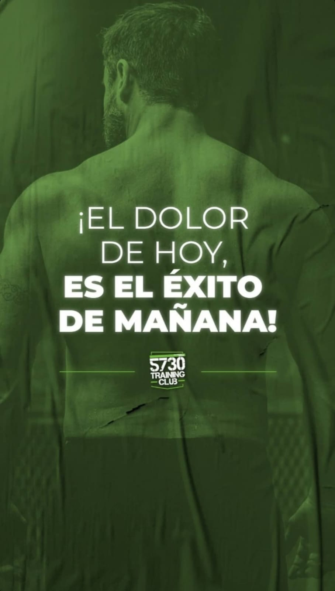
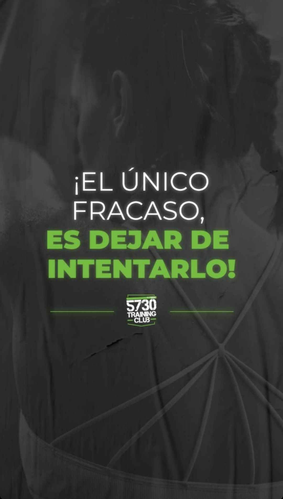
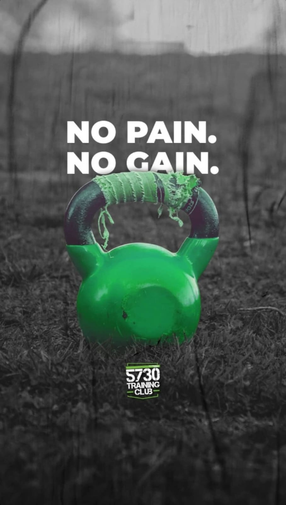

• 5730 Training CLUB •
Contáctanos👇
- 10 años de experiencia nos avalan.
- Ofrecemos diversas clases, incluyendo opciones virtuales disponibles solo a través del celular. También organizamos eventos como competencias de CrossFit.
- 5730 Training Club es un centro de crosstraining ubicado en distintos puntos de la ciudad.
  
Encuéntranos en Google Maps:
5730 Training Club